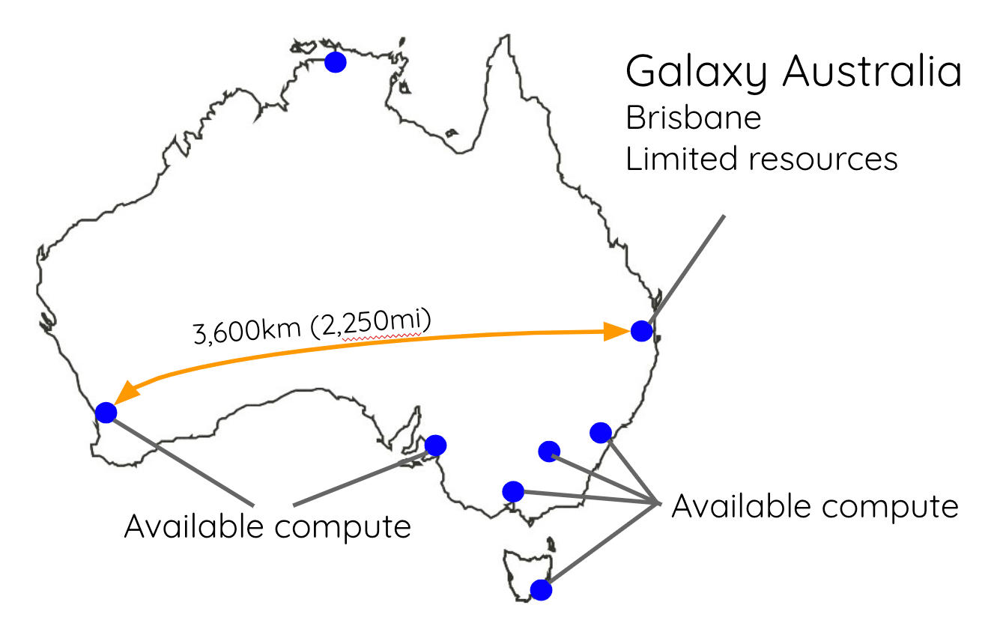
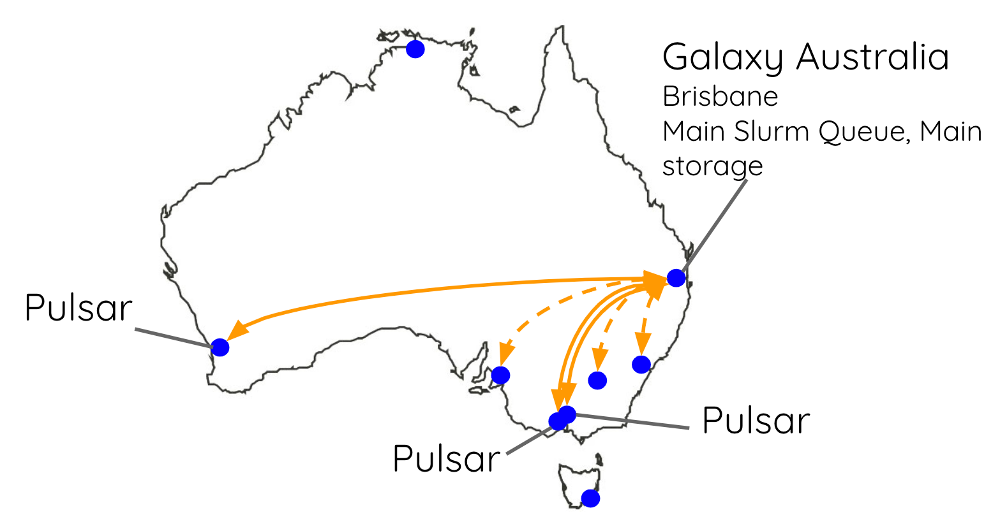

Running Jobs on Remote Resources with Pulsar
Contributors
Questions
How does pulsar work?
How can I deploy it?
Objectives
Have an understanding of what Pulsar is and how it works
Install and configure a Pulsar server on a remote linux machine
Be able to get Galaxy to send jobs to a remote Pulsar server
Requirements
- slides Slides: Ansible
- tutorial Hands-on: Ansible
- slides Slides: Galaxy Installation with Ansible
- tutorial Hands-on: Galaxy Installation with Ansible
- A server/VM on which to deploy Pulsar
What are heterogenous compute resources?
Differences in:
- Operating system or version
- Users/groups
- Data accessibility
- Administrative control
- Physical Location (i.e. Cities)
Galaxy expects:
- One OS, version (dependencies)
- Shared filesystem w/ fixed paths
Example - Australia

Partial solution - CLI job runner
SSH to remote, submit jobs with CLI sbatch, qsub, etc.
Still depends on shared FS
Pulsar
Galaxy’s remote job management system
-
Can run jobs on any(?) OS including Windows
-
Multiple modes of operation for every environment
Pulsar - Architecture
-
Pulsar server runs on remote resource (e.g. cluster head node)
-
Galaxy Pulsar job runner is Pulsar client
-
Communication is via HTTP or AMQP, language is JSON
-
File transport is dependent on communication method
Pulsar - Architecture
Pulsar Transports - RESTful
Pulsar server listens over HTTP(S)
Pulsar client (Galaxy) initiates connections to Pulsar server
Good for:
- Environments where firewall, open ports are not concerns
- No external dependencies (AMQP server)
Pulsar Transports - AMQP
Pulsar server and client connect to AMQP server
Good for:
- Firewalled/NATted remote compute
- Networks w/ bad connectivity
Pulsar Transports - Embedded
Galaxy runs Pulsar server internally
Good for:
- Manipulating paths
- Copying input datasets from non-shared filesystem
Pulsar - Job file staging
Pulsar can be configured to push or pull when using RESTful:
- Push
- Galaxy sends job inputs, metadata to Pulsar over HTTP
- Upon completion signal from Pulsar, Galaxy pulls from Pulsar over HTTP
- Pull
- Upon setup signal, Pulsar pulls job inputs, metadata from Galaxy over HTTP
- Upon completion, Pulsar pushes to Galaxy over HTTP
Pulsar can use libcurl for more robust transfers with resume capability
AMQP is pull-only because Pulsar does not run HTTP server
Pulsar - Dependency management
Pulsar does not provide Tool Shed tool dependency management. But:
- It has a similar dependency resolver config to Galaxy
- It can auto-install conda dependencies
- It can use containers too!
Pulsar - Job management
Pulsar “managers” provide job running interfaces:
queued_python: Run locally on the Pulsar serverqueued_drmaa: Run on a cluster with DRMAAqueued_cli: Run on a cluster with localqsub,sbatch, etc.queued_condor: Run on HTCondor
Pulsar Australia

Resources
- Pulsar Read-the-docs
- Pulsar on galaxyproject.org
- Pulsar Github
- Pulsar Ansible
Key Points
- Pulsar allows you to easily add geographically distributed compute resources into your Galaxy instance
- It also works well in situations where the compute resources cannot share storage pools.
Thank you!
This material is the result of a collaborative work. Thanks to the Galaxy Training Network and all the contributors! Tutorial Content is licensed under
Creative Commons Attribution 4.0 International License.
Tutorial Content is licensed under
Creative Commons Attribution 4.0 International License.